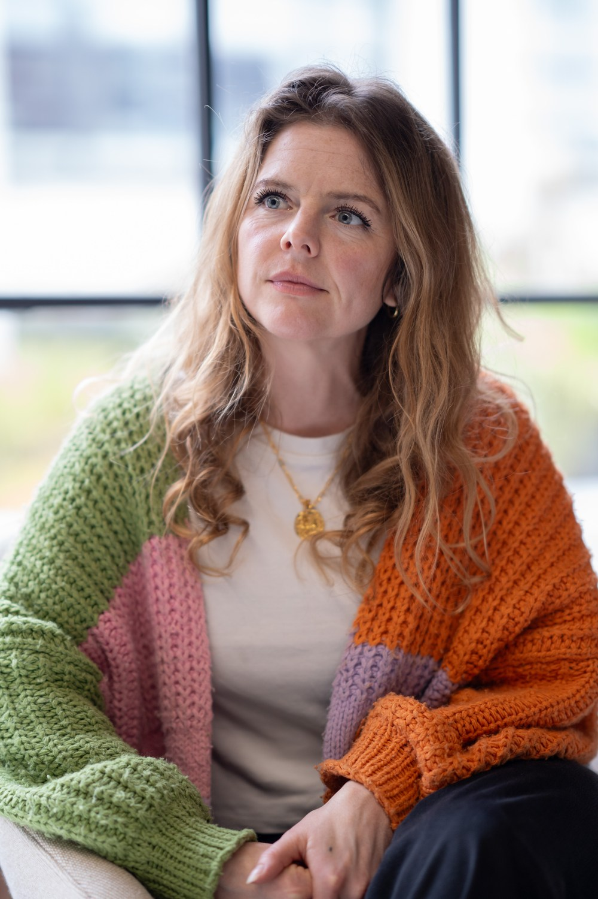

Elizabeth Gibney.
Science journalism across writing, podcasts, video and radio.
I cover physics, astronomy, chemistry, artificial intelligence and science policy for Nature. I also contribute to podcasts and video, and appear regularly on BBC Inside Science.

AI
POLICY
Photo: Jess Hallett/Nature
Four ways
of telling stories.
Writing
News, features and analysis for Nature.
Nature
Podcast
Contributions and occasional presenting.
Nature
Video
Science stories in video, appearing across Nature’s social channels.
BBC Inside
Science
Regular appearances discussing the latest science news.
Latest work
This AI ‘mechanic’ can peer inside the black box of other neural networks
BBC Inside Science · 12 November 2026Has China finally curbed its emissions?
Writing · 4 November 2026Toothbrush zaps bacteria with electricity that’s made when bristles move
Podcast · 23 October 2026Briefing Chat: How physicists successfully trapped the electron's antimatter equivalent
Writing · 15 October 2026World’s timekeepers upend how they adjust time to avoid catastrophic ‘negative second’
BBC Inside Science · 15 October 2026The climate changing power of 400 billion toasters
Writing · 14 October 2026Is this idea from AI or humans? A detector claims it can tell
A little of
everything.
A bit
about me.
I'm Elizabeth Gibney, a senior reporter at Nature, where I joined the news team in 2013. My reporting covers physics, astronomy, chemistry, artificial intelligence and science policy.
Before joining Nature, I worked at CERN, Times Higher Education, Research Fortnight and Research Europe. I studied natural sciences at the University of Cambridge and science communication at Imperial College London.
Alongside writing, I contribute to the Nature Podcast, occasionally present episodes, and present videos for Nature's YouTube, TikTok, Instagram and Facebook channels. I also appear on BBC Inside Science roughly once a month.
Awards
- Research Policy or Funding Story of the Year (2025), Association of British Science Writers. Awarded for reporting on CERN’s decision to end cooperation with Russian institutions.
- Angela Croome Award (2020), European Geosciences Union. Recognises reporting on Earth, planetary and space science.
- ABSW highly commended (2015) for the Nature Video short film Laniakea: Our home supercluster.
- Lovie Awards shortlist (2015) in Online Video: Events and Live Broadcasts for Rosetta Live.
Judging · 2026 Angela Croome Award committee.